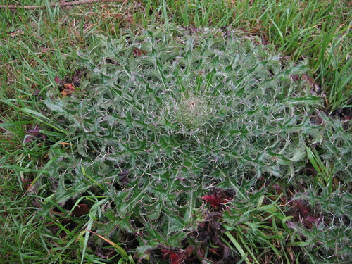
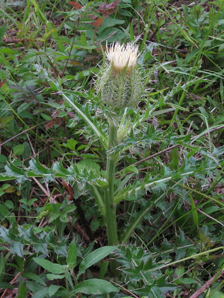
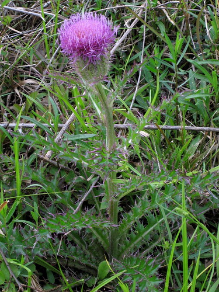
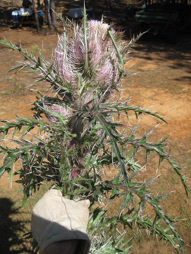
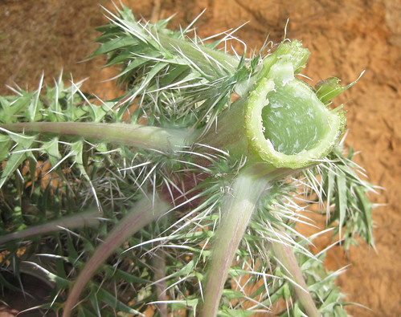
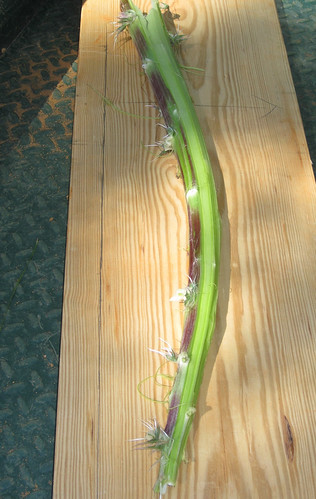
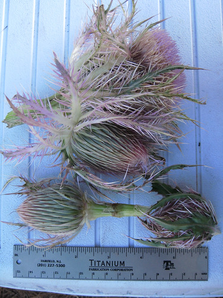

Scientific name: Cirsium species
Abundance: uncommon
What: stem, roots, leaf ribs
How: peel stem then eat raw or cooked; tea from leaves, stem; roots are boiled; large center leaf ribs are stripped from leaf and eaten raw.
Where: fields
When: spring, summer
Nutritional Value: some vitamins and minerals
Other uses: cordage from stem fibers
Dangers: Very prickly
Young bull thistle



Harvested mature thistle. Wear thick gloves.

The hollow stem. You want to peel away the stem's outer red-green layer.

Partially-peeled stem. The outer reddish-green layer easily splits away from the delicious inner light-green layer.

I'm told you can boil, peel and eat the thistle heads like artichokes but I have not tried this yet.

A bane to many landowners, Bull Thistles stand tall and spikely menacing across Texas fields. They can reach over four feet tall in ideal growing conditions with multiple purple flowers on each stalk. The spines along the edges of the leaves and flowers are stiff, sharp, and very painful. Few animals will eat these plants due to the daunting spines and so without any enemies to keep them in check Bull Thistles can overrun a field in just a few years.
Bull Thistles are an absolutely delicious treat if you know the trick. When the very first flowers appear cut down the thistle as close to the ground as possible and cut off the leaves, discarding them. Peel the outer, stringy layer off the stem which is easy to do. Get your thumbnail under it and pull the outer layer off, it'll come off easily. The peeled stalk tastes like sweet celery and I love it raw and used in salads. You can also cook it in any dish which calls for celery such as stews and Asian stir-frys.